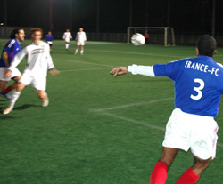
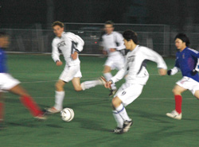
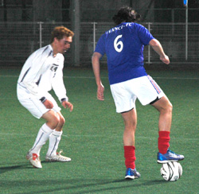

|
Hachioji Park, Sat 20th Jan. Sala finally overcame their bogey-team France with a comfortable 4-0 victory at Hachioji on Saturday. In fact the game was all but over half way through the first half when captain Guido Geisler expertly side footed home Sala's fourth and final goal from the edge of the box.
Much had been made of France's dominance over Sala in the TML in recent years. Amazingly Sala had managed just a solitary point from the five previous league meetings between the two sides and the heartache of last season's cup semi-final defeat on penalties was still fresh in their memories. With the top four sides squaring off against each other in other fixtures over the weekend there couldn't have been more incentive for Sala to come out of the blocks all guns blazing. And uncharacteristically they did.
It was the old guard of Paul Clarke, Guido and Giles Legg who led the way. They had suffered more than anyone at the hands of the French and were determined to seek vengence. Shige, also, was particularly tenacious early on and his partnership with Yusuke in the centre of midfield saw Sala win plenty of possesion. In the absence of Roddy Charles and Toby Long, Giles was given the nod up front and he responded by setting up the first two goals. Five minutes in, Giles was released down the left, his cross finding Dhugal Bedingfield who's cut back was driven in by Shige from the edge of the box. 1-0. Just five minutes later Giles cleverly headed a long ball into space for an unmarked Bedingfield to slot past the keeper. 2-0.

As much as Guido might argue, there was no doubting which was the goal of the game. Twenty minutes in, the threat from Brooke-Smith's corner-kick looked to have passed as the ball trickled out of the area and there looked to be even less danger when Peter Duggan knocked the ball back to Yusuke but the versatile defender/midfielder unleashed a stunning shot from 30 metres that the France keeper could only watch loop into the top corner. 3-0. Five minutes later Guido, in acres of space, ghosted in to seal the result with a trademark sidefooter after France had only partially cleared the ball from Lenny's cross.
France picked up their game towards the end of the half but found it hard to break through the Sala defence, full backs Ian Jelley and Doug Lee doing an excellent job of mopping up. Scottie came on to replace Brookie on the right and immediately got into the action. His pin-point cross should have been headed home by Bedingfield, one of his several misses in the match.
Sala continued to create chances in the second half but a combination of a high French defensive line, some creative offside calls and some poor finishing prevented them from adding to the score. Sid Lloyd was rarely called upon until late in the game when he managed to save an attempted lob with his fingertips to add another clean sheet to his record. Sala seem spoilt for choice in the keeping department at the moment but strangely the next few matches have all been scheduled on Saturday meaning that the in-form Lloyd will most likely keep the number 1 jersey for the meantime. Sala were even afforded the luxury of handing 17 year-old jazz dancing prodigy Kento his Sala debut late in the match. Whether he can dance his way around TML defences remains to be seen.
The loss leaves France in unfamiliar territory near the relegation zone and the news only gets worse as they face surprise league leaders BFC at the same venue next Saturday. Sala face the Geckoes and the Celts in the next two weeks and have an excellent opportunity to make up ground on the leading pack. Could Sala possibly put together three decent games in a row? Unlikely, but anything's possible.
Report by Dhugal Beddingfield
Sorry for poor photo quality (Night shots!!)
|